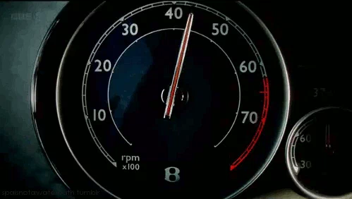

Your browser doesn't support the features required by impress.js, so you are presented with a
simplified version of this presentation.
For the best experience please use the latest Chrome, Safari or Firefox browser.
Rapidez y Velocidad
Rapidez
Magnitud escalar que únicamente indica la magnitud de la velocidad
Es la razón de la distancia recorrida entre el tiempo empleado para recorrerla
$$Rapidez = \frac{\text{distancia}}{\text{tiempo}}$$
Rapidez media
La distancia total recorrida dividido por el tiempo total empleado en recorrerla
$$Rapidez\ media = \frac{{Distancia\ total\ recorrida}}{{tiempo\ empleado\ en\ el\ recorrido}}$$
$$r_{m} = \frac{\Delta x_{t}}{\Delta t_{t}}$$ $$r_{m} = \frac{d_{t}}{t_{t}}$$ Donde: $$r_{m} = rapidez\ media$$ $$\Delta x_{t} = d_{t} = distancia\ total$$ $$\Delta t_{t} = t_{t} = tiempo\ total$$
Si se conocen las posiciones iniciales y finales a lo largo de una trayectoria recta:
$$r_{m} = \frac{x - x_{0}}{t - t_{0}}$$ $$r_{m} = \frac{x_{f} - x_{i}}{t_{f} - t_{i}}$$
Velocidad
Magnitud vectorial que debe señalar la dirección y el sentido, además de la magnitud

Es el desplazamiento realizado dividido entre el tiempo necesario para efectuarlo:
$$\overrightarrow{v} = \frac{\overrightarrow{d}}{t}$$ $$\overrightarrow{v} = \frac{\overrightarrow{r}}{t}$$
Donde:
$$\overrightarrow{v} = velocidad\ del\ movil$$
$$\Delta \overrightarrow{r} = \overrightarrow{d} = desplazamiento\ del\ movil$$ $$\Delta t = t = tiempo\ en\ que\ se\ realiza\ el\ desplazamiento$$
Las unidades de velocidad son los metros sobre segundo
m/s
Velocidad Media
Desplazamiento total dividido entre el intervalo de tiempo empleado
$$\overrightarrow{v_{m}} = \frac{\overrightarrow{\Delta r}}{\Delta t}$$
Donde:
$$ \vec{v_{m}} = velocidad\ media$$ $$\Delta \overrightarrow{r} = \overrightarrow{d} = r_{t} = desplazamiento\ total$$ $$t = t_{t} = tiempo\ total$$
Velocidad instantánea
Una forma es calcular la velocidad media de desplazamientos muy pequeños durante intervalos de tiempos cada vez más pequeños
$$\vec{v_{m}}=\lim_{\Delta t\rightarrow 0} \frac{\Delta \vec{x}}{\Delta t}$$ $$\vec{v_{m}}=\lim_{\Delta t\rightarrow 0} \frac{\Delta \vec{r}}{\Delta t}$$
